▲ 나주목 관아의 문루 정수루. 촬영 시기는 자료에 없다 ⓒ 한국관광공사 · 공공누리 제1유형
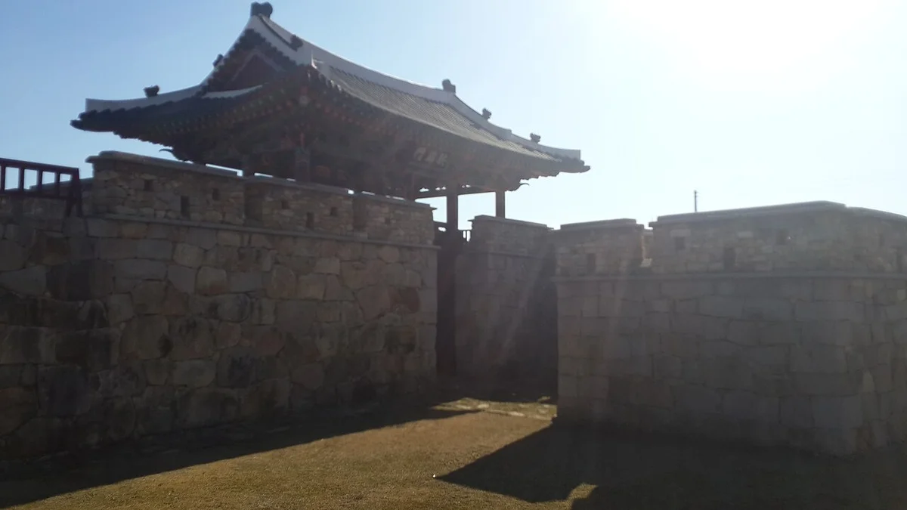
▲ 나주읍성의 서쪽 성문(서성문). 국가유산포털 연혁상 서성문 복원은 2009~2011년으로 기록돼 있다. 촬영 시기는 위키미디어 기록상 2015년 1월이다. ⓒ Mar del Este · CC BY-SA 4.0 · Wikimedia Commons
"금성관이 해체수리에 들어갔다는데, 그래도 나주읍성에 가서 볼 게 있을까? 영산포 황포돛배까지 하루에 묶을 수 있을까?" 이 글은 2026년 10월 21일 기준으로 나주시 문화관광 누리집과 한국관광공사 자료를 바탕으로 읍성권 네 곳(금성관·정수루·나주목사내아·나주향교)과 영산포 황포돛배·홍어거리의 운영 정보를 정리했다. 결론부터 말하면 읍성권은 걸어서 둘러보는 반나절 코스가 되지만, 금성관은 2025년 7월부터 해체수리 공사가 진행 중이라 건물 내부 관람은 기대하지 않는 편이 안전하다. 나주시 금성관 안내 바로가기
나주에 가는 이유는 대개 곰탕이거나 영산강 축제다. 하지만 읍성권에는 보물 건물 두 곳(금성관, 나주향교 대성전)과 관아의 문루, 한옥 숙박까지 모여 있고, 강 쪽 영산포에는 돛배와 홍어거리가 이어진다. 가기 전에 어디가 열려 있는지부터 알아야 헛걸음을 줄인다.
💡 먼저 결론
금성관은 2019년 보물로 지정된 객사로 나주시 안내상 입장료는 무료지만, 2025년 7월 착공한 해체수리가 진행 중이라 현재 내부 개방 여부는 공식 확인하지 못했다. 영산강 황포돛배는 나주시 안내상 화~일요일 운항, 월요일 휴무, 성인 왕복 8,000원이다. 홍어거리는 영산포 선창가 부근에 있다. 이 글에서 '확인하지 못함'이라고 적은 항목은 방문 전 전화로 확인해야 한다.
1. 먼저 바로잡기 — 금성관은 지금 어떤 상태인가
나주시 문화관광 누리집은 금성관을 "나주가 호남의 중심 도시였음을 보여주는 지방궁궐이자 객사"로 소개한다. 2019년 보물 제2037호로 지정됐고 조선시대 객사 건물 중 규모가 가장 크다고 설명하며, 입장료는 무료, 주차장은 있다고 적는다. 주소는 금성관길 8, 문의는 061-339-8613이다.
문제는 현재 상태다. 해체수리 공사는 2025년 7월에 시작됐고(2025년 11월 18일 해체수리 안전기원제 개최), 전통건축수리기술진흥재단이 시공·관리를 맡았다.
1884년 대대적 중건 이후 약 140년 만의 해체 수리로 보도됐다. 2026년 2월 7일부터 14일까지는 가림막 안 공사 현장을 시민에게 열어 매일 10~15시 기념사진 촬영과 공사 설명을 하는 행사 '보물 금성관, 기억을 담다'가 열렸다(국가유산청 2026-02-09 보도자료).
완료 시기는 2024년 6월 보도에서 나주시가 "2027년 완공 목표, 총사업비 100억원"이라고 밝힌 것이 확인되는 가장 최근 수치이며(파이낸셜뉴스·헤럴드경제 보도), 착공 이후 일정이 바뀌었는지는 공식 자료에서 확인하지 못했다. 같은 보도는 홍보관을 설치해 작업 현장을 공개할 예정이라고 전했고, 국가유산청도 2026년 2월 보도자료에서 이 수리 현장을 "중점 공개대상"으로 지정해 공개하겠다고 밝혔다.
다만 지금 경내 출입이 가능한 범위는 공식 고지를 찾지 못했다. 나주시 누리집 금성관 페이지는 이용요금 무료·주차장 있음만 적고 이용시간·휴무 항목이 비어 있으며 수리 안내도 없다. 내부를 볼 수 있다고 믿고 가기보다 외부 관람 위주로 계획하고, 출입 범위는 나주시(061-339-8613)에 먼저 물어보자.
| 항목 | 확인 내용 | 근거 |
|---|---|---|
| 지정 | 2019년 보물 제2037호, 조선시대 객사 중 최대 규모 | 나주시 문화관광 |
| 입장료·주차 | 무료, 주차장 있음 | 나주시 문화관광 |
| 휴무 | 연중무휴(한국관광공사 정보 기준). 나주시 페이지는 공란 | 한국관광공사 TourAPI |
| 해체수리 | 2025년 7월 착공, 2025-11-18 안전기원제. 2026-02-07~14 가림막 안 기념촬영·공사 설명 행사. 완공 목표 2027년·사업비 100억원(2024-06 보도 기준, 이후 변경 여부 확인하지 못함). 현재 내부 출입 가능 여부는 공식 고지 확인하지 못함 | 파이낸셜뉴스·헤럴드경제(2024-06), 머니투데이·아시아경제, 국가유산청 보도자료 |
| 문의 | 061-339-8613(나주시 안내), 061-330-8114(한국관광공사 정보) | 두 곳 모두 확인 필요 |
표의 근거 열을 보면 지정·입장료는 나주시, 휴무는 한국관광공사로 출처가 갈리고, 나주시 페이지는 이용시간·휴무가 비어 있다. 수리 중인 금성관의 현재 출입 범위는 어느 자료에도 없어서 표 맨 아래 문의처로 먼저 확인해야 한다.
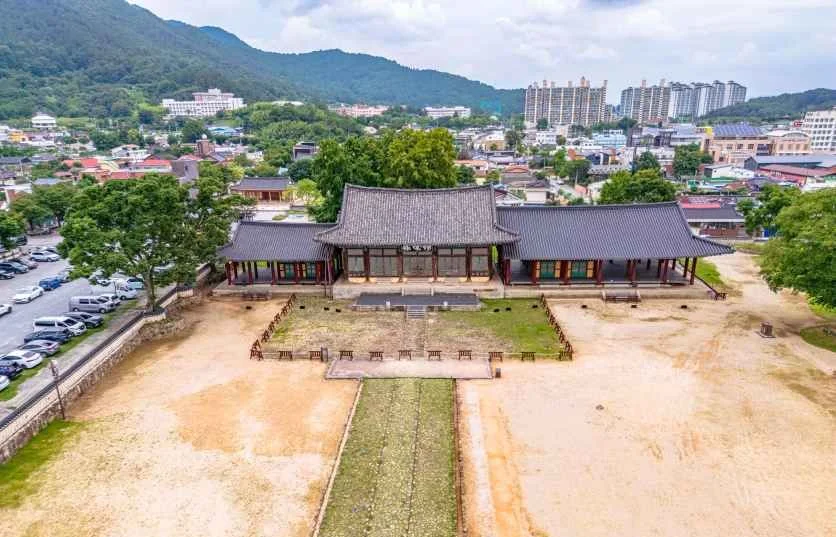
▲ 한국관광공사가 금성관 항목에 올린 항공 사진. 촬영 시기는 자료에 없어 현재의 공사 상태와 다를 수 있다. ⓒ 한국관광공사 · 공공누리 제1유형
2. 읍성권 네 곳의 위치 — 금성관길 하나에 모여 있다
금성관·정수루·나주목사내아는 모두 '금성관길' 주소를 쓴다. 한국관광공사 자료상 금성관은 금성관길 8, 정수루는 금성관길 13-20, 목사내아는 금성관길 13-8이다. 나주향교는 향교길 38로 별도 길이다. 구체적인 도보 시간은 공식 수치가 없어 적지 않는다.
| 장소 | 주소 | 운영 정보 | 확인 범위 |
|---|---|---|---|
| 금성관 | 금성관길 8 | 입장 무료, 주차장 있음 | 나주시 안내, 해체수리 상태 별도 확인 |
| 정수루 | 금성관길 13-20 | 문의 061-339-8615. 이용시간은 한국관광공사·나주시 안내 모두 비어 있고, 주차 정보도 확인하지 못함 | 나주시 안내 정보 기준. 국가유산포털상 문화유산자료(1984-02-29 지정, 소유·관리 나주시) |
| 나주목사내아 | 금성관길 13-8 | 09:00~18:00, 연중무휴, 주차 가능(한국관광공사 정보 기준). 한옥 숙박 예약 운영 | 숙박 이용객 외 관람 조건은 확인하지 못함 |
| 나주향교 | 향교길 38 | 09:00~18:00, 연중무휴, 주차 가능(한국관광공사 정보 기준) | 입장료 공식 표기 확인하지 못함 |
네 곳 중 운영 시간이 시설 쪽에서 비어 있는 곳은 정수루뿐이고, 목사내아와 향교는 한국관광공사 정보에 09:00~18:00이 올라 있다. 같은 읍성권이라도 확인된 정보의 양이 달라서 일정은 정수루를 가볍게 지나치는 쪽으로 잡기 쉽다.
3. 정수루와 나주목사내아 — 관아의 문과 안채
정수루는 나주목 관아의 문루다. 한국관광공사가 싣고 있는 나주시 안내에 따르면 지지(地誌) 문헌에 '관문'으로 기록됐고, 1603년 나주목사가 세웠다는 전승이 있으며, 『여지도서』에는 다른 목사가 세웠다고 적혀 있어 기록이 엇갈린다.
문루를 지나면 동헌이 있었다. 지금 건물은 구조와 양식으로 보아 19세기에 크게 중수된 것으로 본다.
국가유산포털에는 전남 문화유산자료(1984년 2월 29일 지정, 나주시 금계동 13-18, 소유·관리 나주시)로 올라 있다. 1970년대까지 정수루 아래로 사람과 차가 다녔으나 문화재 보호를 위해 현재는 우회시킨다. 정수루 한국관광공사 정보 바로가기
▲ 나주목 관아의 문루 정수루. 촬영 시기는 자료에 없다. ⓒ 한국관광공사 · 공공누리 제1유형
정수루를 지나 내동헌에 해당하는 나주목사내아가 남아 있다. 나주시는 이곳을 '거문고 소리를 들으며 학처럼 고고하게 살고자 하는 군자의 지조가 깃든 집'으로 소개하고, 금학헌·금라헌 두 채로 한옥 숙박을 운영한다.
예약 문의는 061-332-6565이며 상담 시간은 10:00~16:00으로 안내된다. 한국관광공사 정보는 이용시간을 09:00~18:00, 연중무휴, 주차 가능으로 적지만 "자세한 사항은 전화문의 요망"이라는 단서가 붙어 있다.
숙박 이용객이 아닌 방문객의 출입 조건과 입장료는 나주시 페이지에서 확인하지 못했다. 일부 비공식 소개 글은 무료 관람이라고 적고 휴관일도 월요일과 연중무휴로 엇갈려 근거로 삼지 않았다. 나주목사내아 공식 안내 바로가기
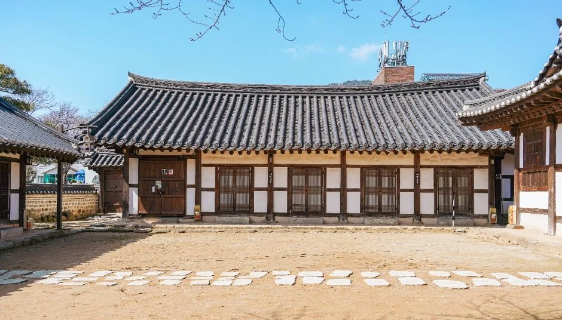
▲ 나주목사내아의 한옥 본채와 마당. 촬영 시기는 자료에 없다. ⓒ 한국관광공사 · 공공누리 제1유형
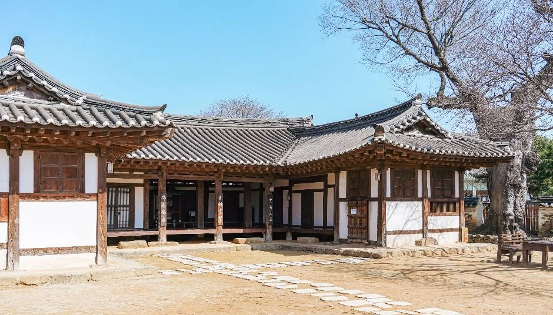
▲ 건물이 마당을 둘러싼 배치. 촬영 시기는 자료에 없다. ⓒ 한국관광공사 · 공공누리 제1유형
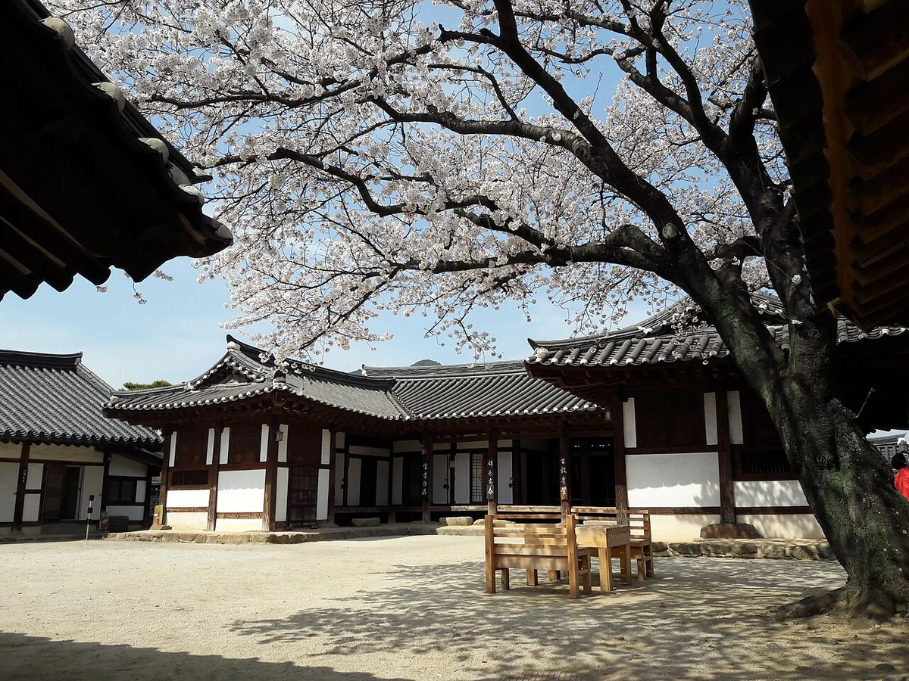
▲ 나주목사내아 마당. 사진 속 나무에 벚꽃이 피어 있다. ⓒ 南眞 · CC BY-SA 4.0 · Wikimedia Commons
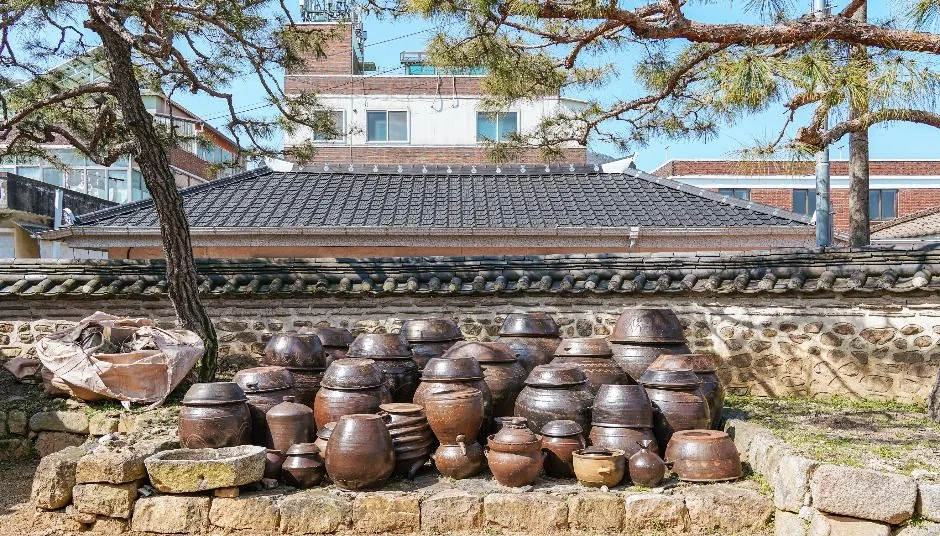
▲ 돌담 앞에 놓인 장독들. 촬영 시기는 자료에 없다. ⓒ 한국관광공사 · 공공누리 제1유형
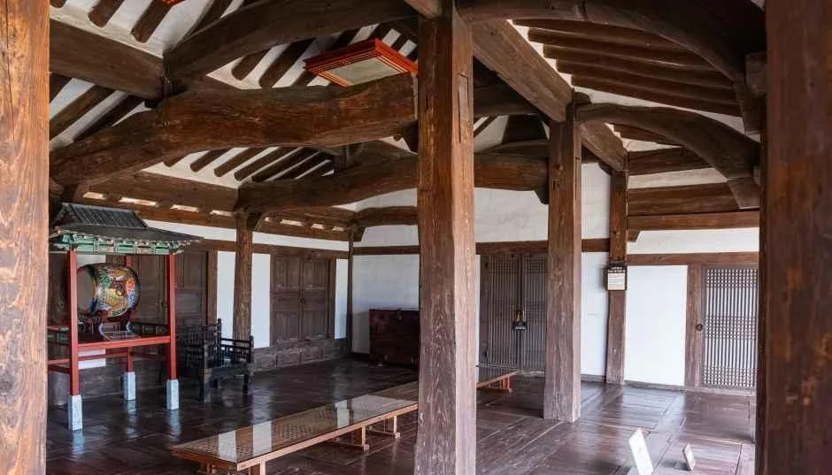
▲ 목사내아의 마루와 목구조. 어느 채인지는 자료에 없다. ⓒ 한국관광공사 · 공공누리 제1유형
4. 나주향교 — 보물 대성전을 볼 수 있는 곳
나주향교 대성전은 국가유산포털에 보물 제394호(1963년 9월 2일 지정)로 올라 있다. 정면 5칸, 측면 4칸의 팔작지붕 건물이고, 일반 향교와 달리 대성전과 명륜당의 위치가 바뀌어 있는 것이 특징이라고 설명한다. 창건 연도는 국가유산포털 한국어 본문(태조 7년, 1398년)과 영문 등 다른 설명(태종 7년, 1407년)이 엇갈려 이 글에서는 단정하지 않는다. 국가유산포털 나주향교 대성전 바로가기
한국관광공사 정보상 나주향교는 09:00~18:00, 연중무휴, 주차 가능이고 문의는 061-334-2369다. 입장료는 공식 표기를 확인하지 못했다. 소재지는 자료에 따라 향교길 38 또는 36-11로 달리 적혀 있다. 한 여행 안내 사이트는 무료라고 하지만 이 글에서는 근거로 삼지 않았다.
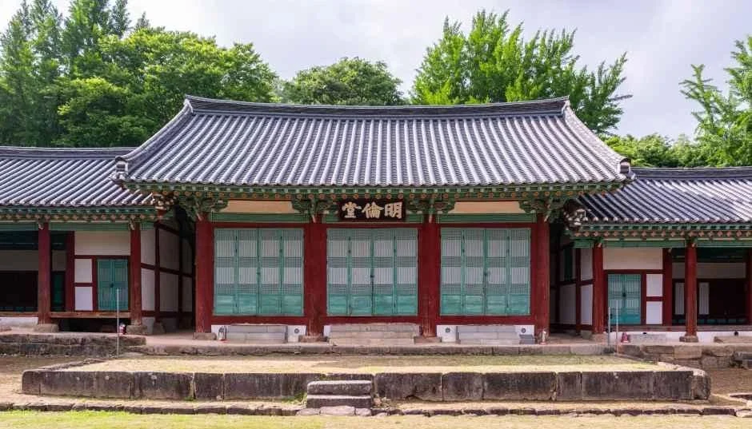
▲ 나주향교 경내 건물. 어느 건물인지는 자료에 명시돼 있지 않다. ⓒ 한국관광공사 · 공공누리 제1유형
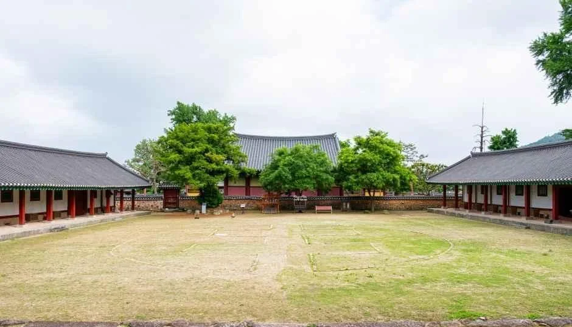
▲ 향교 경내의 넓은 마당. 촬영 시기는 자료에 없다. ⓒ 한국관광공사 · 공공누리 제1유형
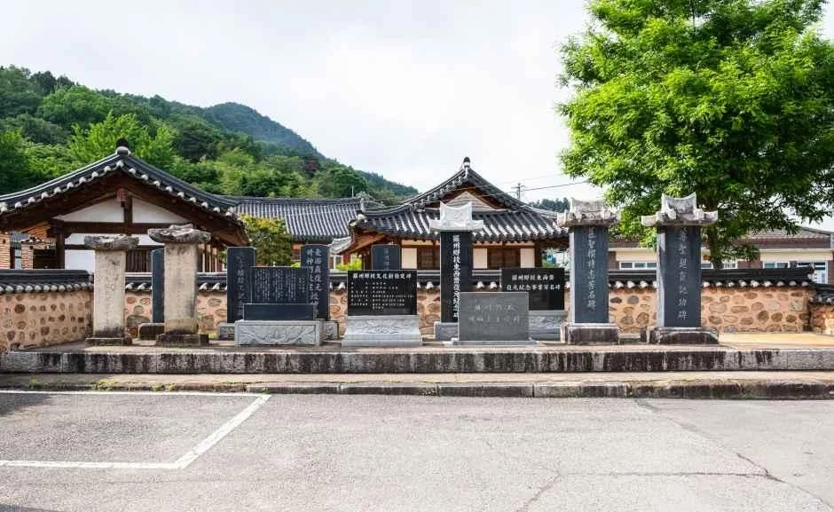
▲ 나주향교 외부에서 본 건물 배치. 촬영 시기는 자료에 없다. ⓒ 한국관광공사 · 공공누리 제1유형
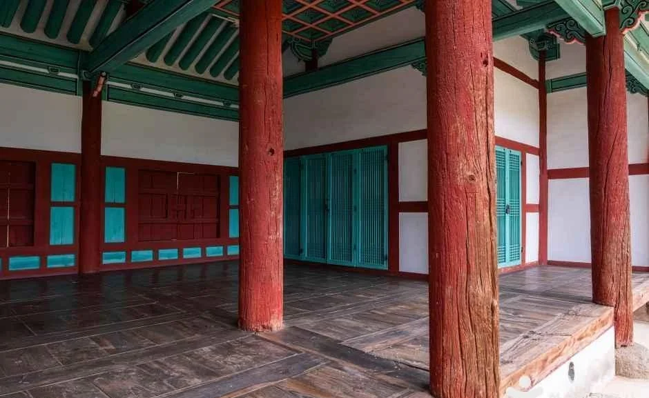
▲ 향교 건물의 마루와 기둥. 어느 건물인지는 자료에 명시돼 있지 않다. ⓒ 한국관광공사 · 공공누리 제1유형
5. 영산포 황포돛배 — 월요일은 쉬고, 요금과 시간표는 이렇다
영산포 선착장(나주시 등대길 80)에서 출발하는 황포돛배는 나주시 안내상 화~일요일에 운항하고 월요일(공휴일 제외)과 1월 1일, 설·추석 당일은 쉰다. 점심시간(12:00~13:00)에는 배가 없다.
하루 10회, 첫 배는 9:40, 마지막 배는 17:00이며, 11~2월 동절기에는 16:20 배까지만 운항한다. 2026년 10월 21일은 하절기에 해당한다.
기상 여건이나 선박 상태에 따라 운항하지 않을 수 있다. 나주시 황포돛배 안내 바로가기
| 구분 | 개인(왕복) | 단체(20인 이상) |
|---|---|---|
| 성인 | 8,000원 | 7,000원 |
| 청소년(중고생) | 6,000원 | 5,000원 |
| 초등학생 | 4,000원 | 3,000원 |
| 유아(만 6세 미만) | 무료 | 2,000원 |
| 출발 시각(하절기) | 9:40 · 10:20 · 11:00 · 13:00 · 13:40 · 14:20 · 15:00 · 15:40 · 16:20 · 17:00 | |
우대 대상(나주시민, 만 65세 이상, 장애인, 국가유공자 등)은 개인요금의 50% 할인이며 증빙이 필요하다. 선박별로 최소 이용 인원이 있어 빛가람호는 성인 3명 이상, 나주호는 13명 이상, 왕건호는 50명 이상이다. 문의는 061-332-1755다.
공식 자료끼리 어긋나는 부분이 있다. 나주시 시간표는 소요 약 30분·앙암바위 왕복 4.5km로 적지만 요금표는 한국천연염색박물관 왕복 10km로 표기하고, 한국관광공사 정보는 왕복 10km·50분이라고 적는다. 어느 쪽이 현재 운항 코스인지는 확인하지 못했으니 예약 전화로 물어보자. 주차도 나주시 관광지 페이지는 "주차장 없음", 한국관광공사 정보는 "가능"이라 엇갈린다.
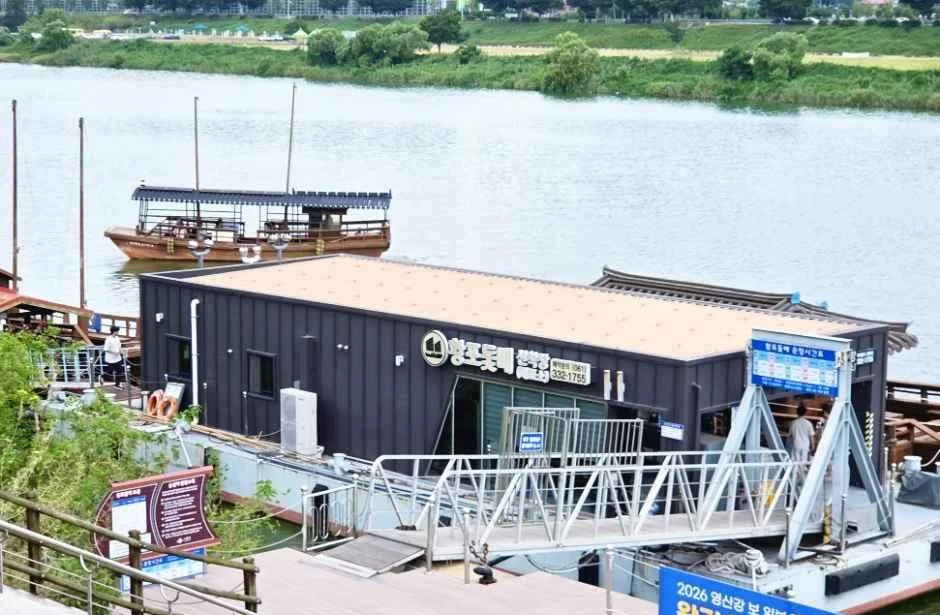
▲ 영산포 선착장의 매표소와 정박한 황포돛배. 촬영 시기는 자료에 없다. ⓒ 한국관광공사 · 공공누리 제1유형
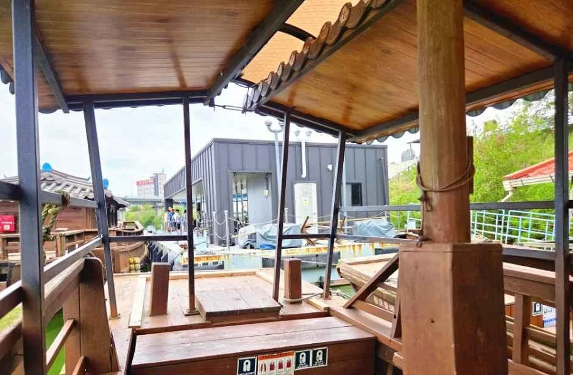
▲ 황포돛배 선상의 목조 공간. 촬영 시기는 자료에 없다. ⓒ 한국관광공사 · 공공누리 제1유형
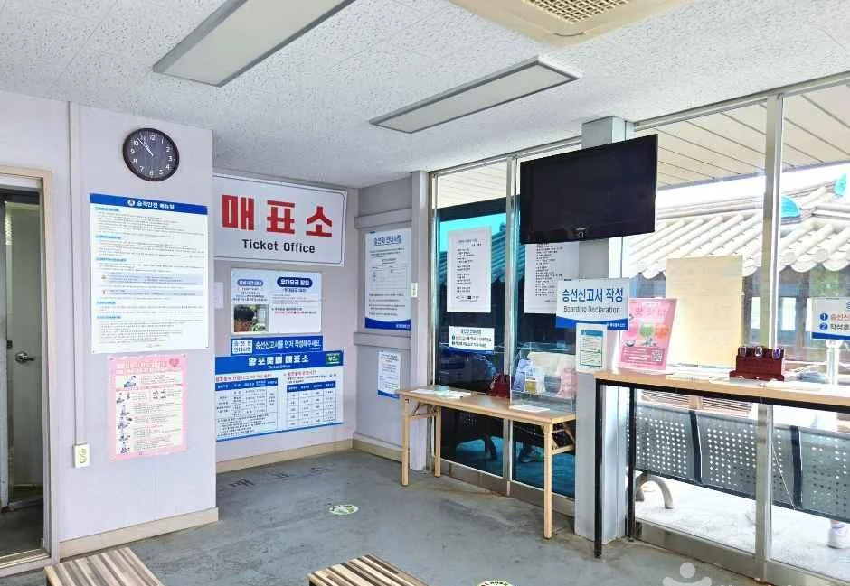
▲ 황포돛배 선착장 매표소 내부. 촬영 시기는 자료에 없어 요금·시간은 본문의 나주시 안내를 기준으로 한다. ⓒ 한국관광공사 · 공공누리 제1유형
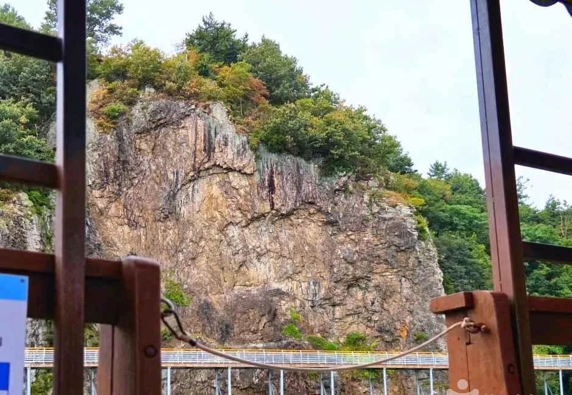
▲ 황포돛배나루터 항목에 등록된 강변 바위 절벽 사진. 정확한 지점은 자료에 없다. ⓒ 한국관광공사 · 공공누리 제1유형
선착장 바로 옆에는 영산포 등대가 있다. 나주시는 이 등대를 우리나라 내륙 하천에서 유일한 등대로 소개하며, 일제강점기에 세워져 1989년까지 수위 관측시설로 쓰였다고 설명한다. 황포돛배는 1977년에 자취를 감췄다가 2008년에 복원됐다. 영산강 축제 같은 행사 정보는 나주영산강축제 기사에 정리했으므로 여기서는 반복하지 않는다.
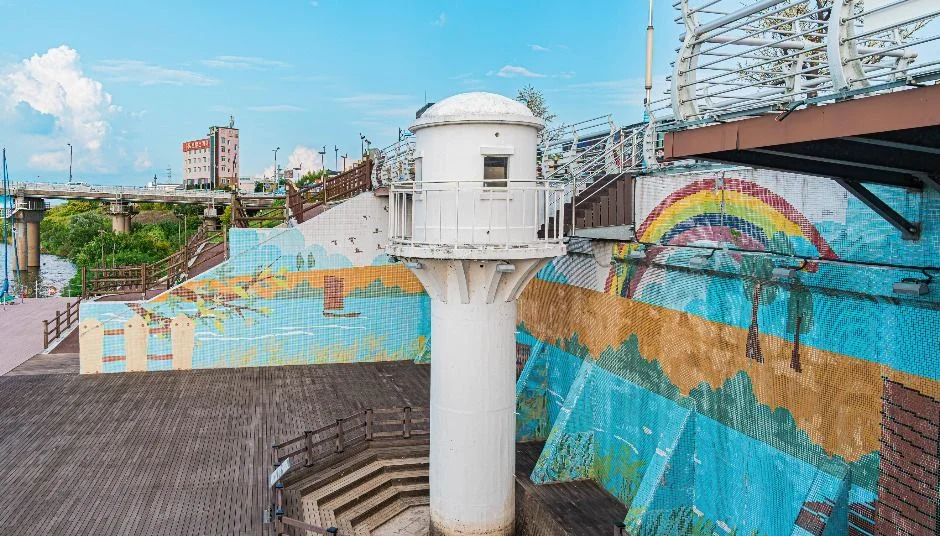
▲ 영산포 등대와 옹벽 벽화. 촬영 시기는 자료에 없다. ⓒ 한국관광공사 · 공공누리 제1유형
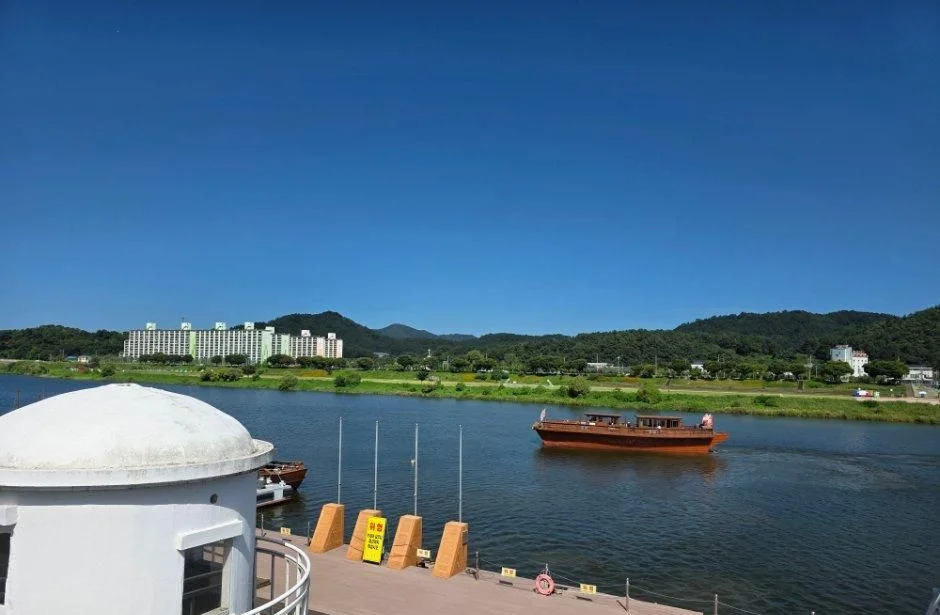
▲ 등대 곁에서 본 영산강. 촬영 시기는 자료에 없다. ⓒ 한국관광공사 · 공공누리 제1유형
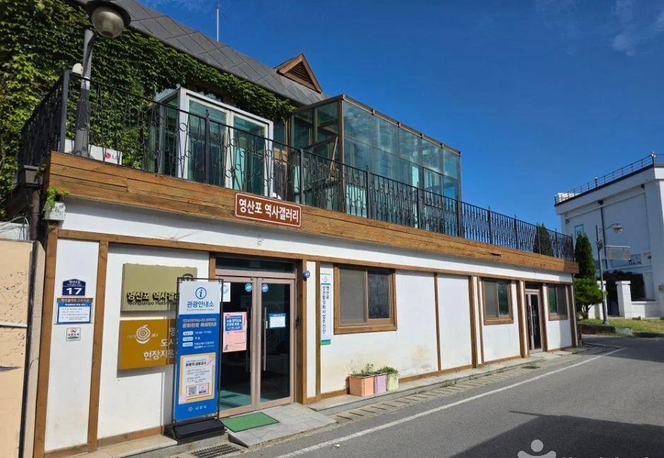
▲ 인근 영산포역사갤러리 외관. 운영 정보는 이번에 확인하지 못했다. ⓒ 한국관광공사 · 공공누리 제1유형
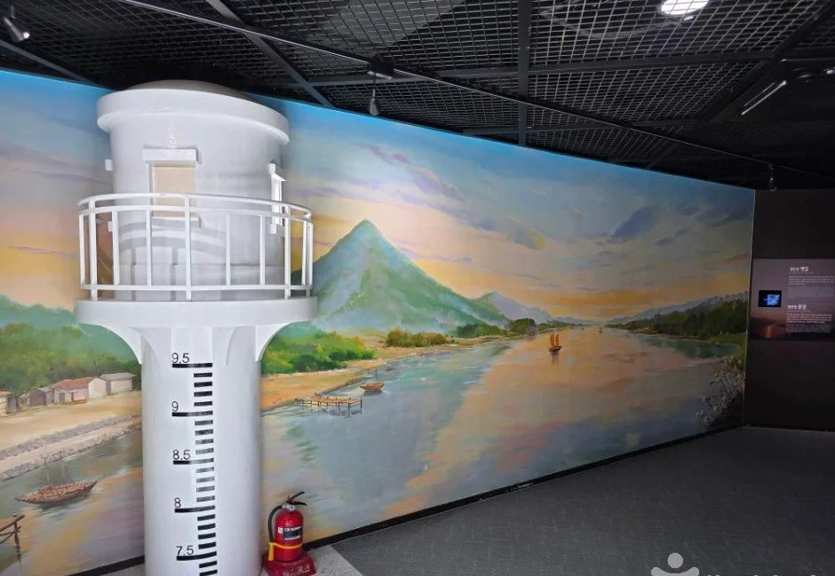
▲ 영산포역사갤러리 안의 등대 모형 전시. 촬영 시기는 자료에 없다. ⓒ 한국관광공사 · 공공누리 제1유형
6. 영산포 홍어거리 — 홍어가 강을 따라 올라온 길
나주시는 영산포를 홍어로 유명한 곳으로 소개하며 홍어거리를 '나주 3대 맛거리' 가운데 하나인 남도음식거리로 꼽는다. 위치는 영산동 선창가 부근이다. 흑산도에서 잡힌 홍어가 영산강을 따라 올라오는 동안 약 일주일 자연 발효되어 독특한 맛이 생겼다고 전해진다는 설명도 같은 페이지에 있다. 업소 수와 영업시간, 거리 주차 정보는 나주시 페이지에 없어 확인하지 못했다. 나주시 영산포 홍어거리 바로가기
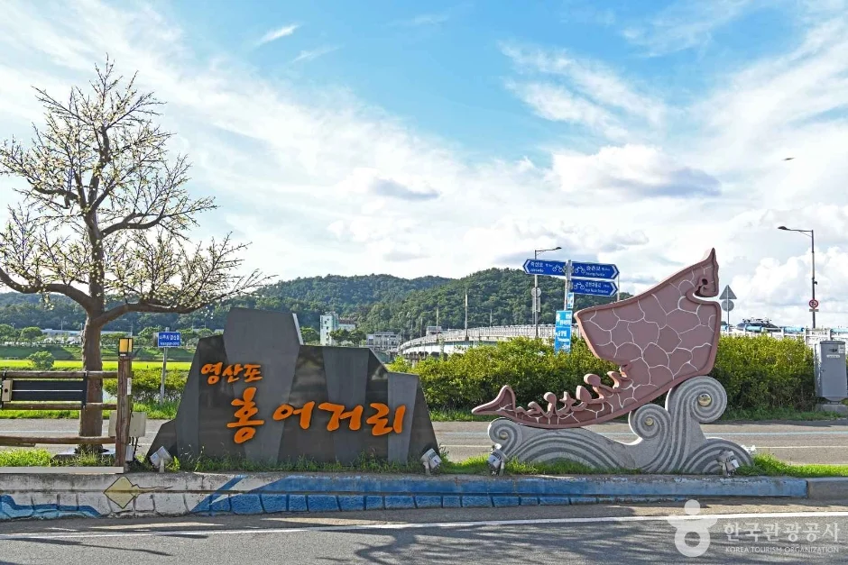
▲ 영산포 홍어거리 표지석. 하단의 한국관광공사 로고는 변경금지 유형이라 원본 그대로 두었다. ⓒ 한국관광공사 · 공공누리 제3유형(변경금지)
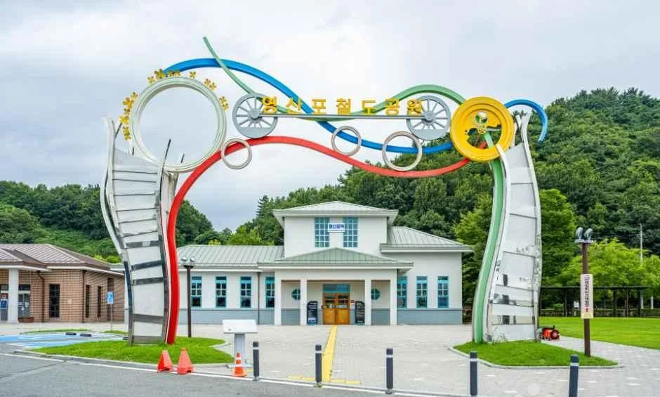
▲ 인근 영산포철도공원의 옛 역사 건물과 조형물. 촬영 시기는 자료에 없다. ⓒ 한국관광공사 · 공공누리 제1유형
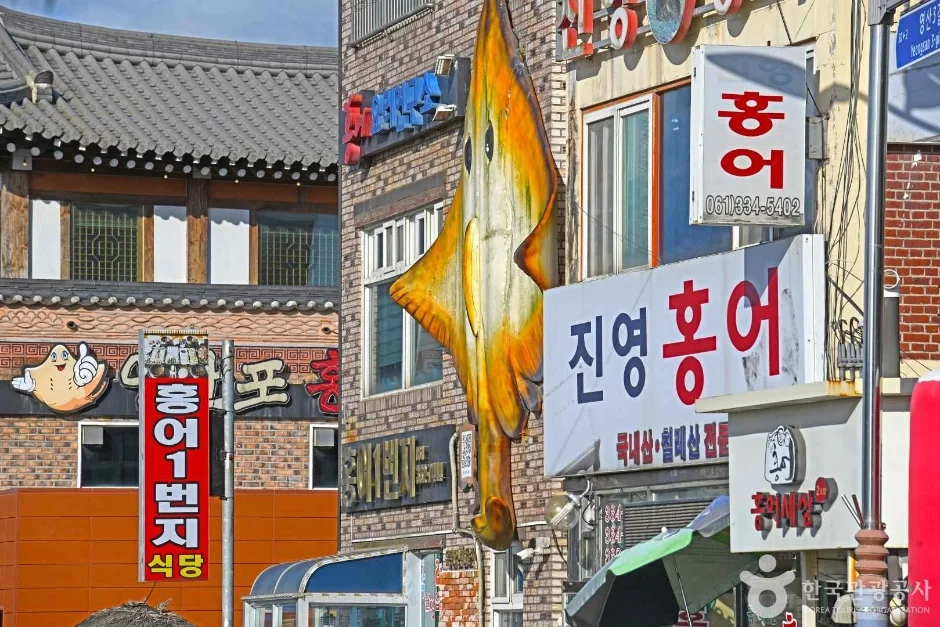
▲ 홍어 전문점 간판이 늘어선 골목. 촬영 시기는 자료에 없다. ⓒ 한국관광공사 · 공공누리 제3유형(변경금지)
가격은 업소마다 다르고 공식 기준이 없어 적지 않는다. 시기 맞춰 가고 싶다면 영산포 홍어·한우축제가 있다. 2026년 제22회는 5월 22일부터 24일까지 영산강 둔치체육공원 일원에서 열렸고, 다음 일정은 확인하지 못했다.
7. 반나절 코스로 짜면
읍성권을 먼저 걷고 오후에 영산포로 넘어가는 순서가 시간표상 자연스럽다. 돛배 첫 배(9:40)에 맞추면 오전을 영산포에서 시작할 수도 있다. 읍성권과 영산포 사이 이동 시간은 공식 수치가 없어 적지 않았으니 지도 앱으로 확인하자.
| 순서 | 할 일 | 체크 |
|---|---|---|
| 오전 | 금성관 외부·정수루·목사내아 둘러보기 | 금성관 해체수리 중 내부 출입 불가 가능성 |
| 점심 전후 | 향교길 나주향교 대성전 관람 | 09:00~18:00, 연중무휴(한국관광공사 정보) |
| 점심 | 읍성권 곰탕집 또는 영산포 홍어거리 식사 | 영업시간은 각 업소 확인 |
| 오후 | 영산포 선착장 황포돛배, 등대 | 12:00~13:00 운항 없음, 월요일 휴무, 마지막 배 17:00 |
시간이 남고 가을 풍경이 목적이라면 읍성권과 별개로 남평읍의 나주 은행나무 수목원(동촌로 236-42)이 있다. 한국관광공사 정보 기준 연중무휴이고 3~11월 10:00~일몰, 12~2월 10:00~18:00 또는 19:00로 안내되며, 주차 가능, 문의 061-333-7788이다. 읍성권에서 가는 시간과 입장료는 공식 자료에서 확인하지 못했고, 아래 사진은 한국관광공사 소개 사진이라 촬영일은 자료에 없다. 운영 시간은 방문 전 전화로 확인하자.
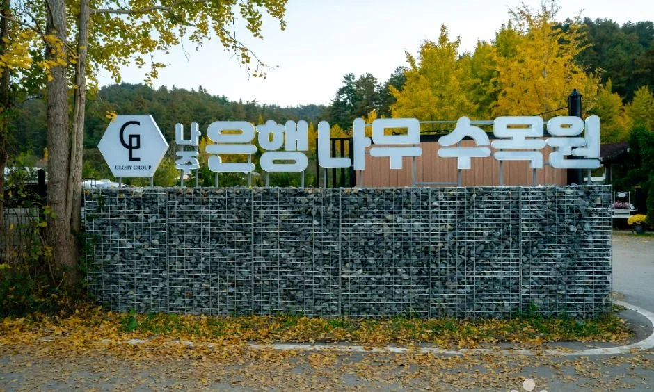
▲ 나주 은행나무 수목원 입구 표지석. 노랗게 물든 나무와 떨어진 잎이 보인다. ⓒ 한국관광공사 · 공공누리 제1유형
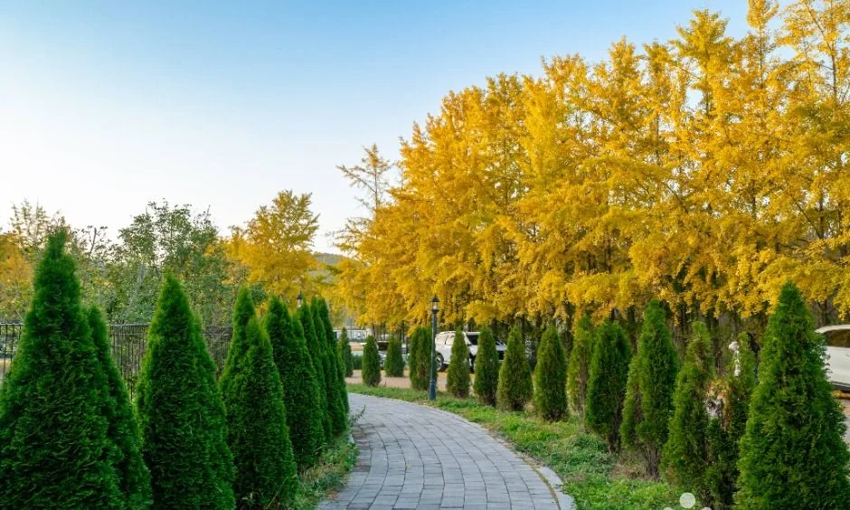
▲ 수목원 산책길. 은행나무 잎이 노랗게 물들어 있다. ⓒ 한국관광공사 · 공공누리 제1유형
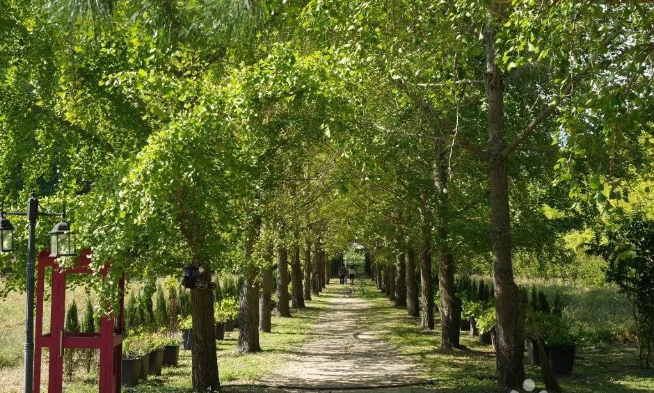
▲ 수목원 안 은행나무길. 나무 잎이 연두에서 노랑으로 넘어가는 중으로 보인다. ⓒ 한국관광공사 · 공공누리 제1유형
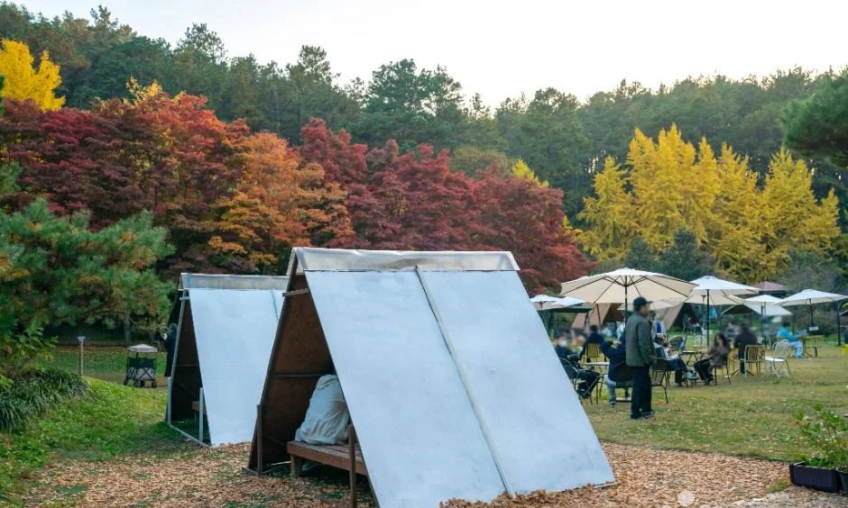
▲ 수목원 안 단풍 숲과 쉼터. 붉은 단풍이 보인다. ⓒ 한국관광공사 · 공공누리 제1유형
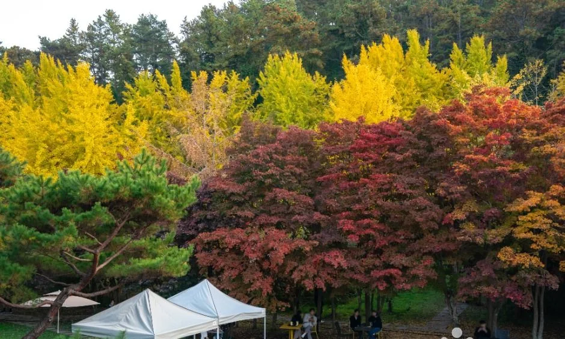
▲ 붉은 단풍나무와 노란 은행나무가 함께 보이는 숲. ⓒ 한국관광공사 · 공공누리 제1유형
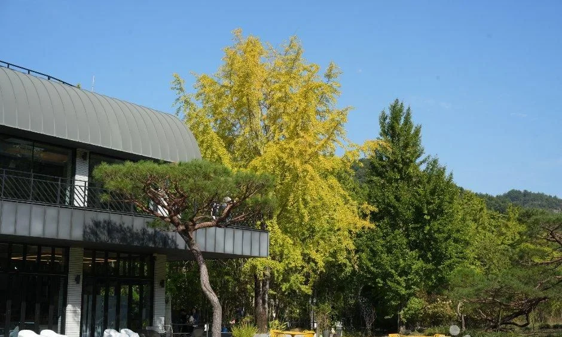
▲ 수목원 안 카페 건물과 잔디 정원. 영업시간은 확인하지 못했다. ⓒ 한국관광공사 · 공공누리 제1유형
전남 다른 권역과 이어 가려면 광주 쪽 양림동·송정시장 기사, 화순 운주사 가이드, 담양 죽녹원 기사를 참고하자.
✅ 출발 전 체크
1) 금성관은 해체수리 공사 중이므로 내부 개방 여부를 061-339-8613에 확인 2) 황포돛배는 월요일 휴무, 성인 8,000원, 12:00~13:00 운항 없음, 061-332-1755 3) 목사내아·향교 입장료와 정수루 이용시간은 공식 확인 못함(정수루는 이용시간 항목 자체가 공란이라 문의 061-339-8615) 4) 돛배 소요시간(30분 vs 50분)과 주차 가능 여부는 자료마다 달라 전화 확인.
8. 정리
나주읍성권은 금성관길에 금성관·정수루·목사내아가 모여 있고, 향교길의 나주향교 대성전(보물 제394호)까지 반나절이면 걸어 볼 수 있다. 다만 금성관은 2025년 7월부터 해체수리 공사가 진행 중이라 내부 개방을 전제로 가지는 말아야 한다. 영산포 황포돛배는 화~일요일 운항, 성인 왕복 8,000원이다.
금성관 수리 완료 시기의 최신 확정(2027년 완공 목표는 2024년 보도)과 현재 출입 범위, 목사내아 비숙박객 관람 조건, 정수루 이용시간·주차, 홍어거리 업소·주차, 돛배 코스·소요시간은 확인하지 못했다. 이 기사는 2026년 10월 21일 기준이므로 방문 전 나주시 관광과(061-339-8724)나 각 시설에 확인하자.